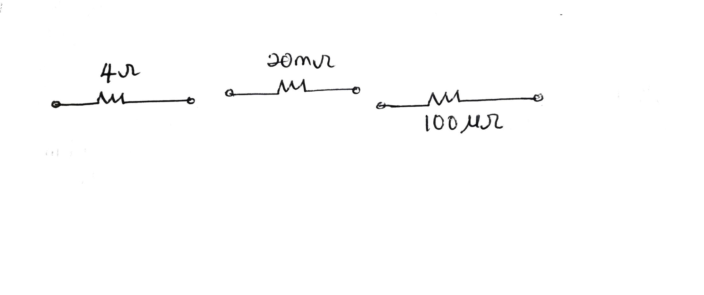
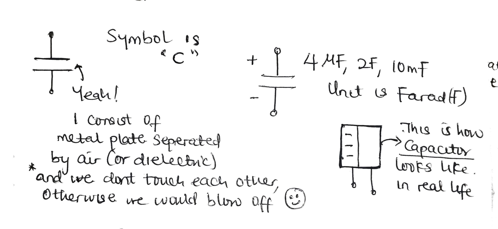
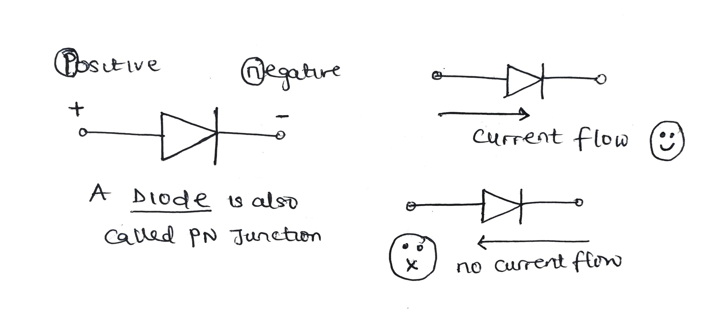
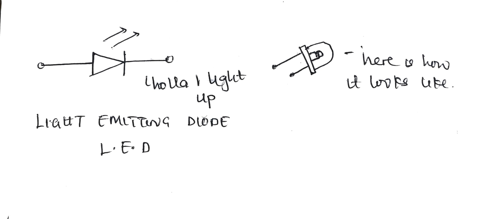
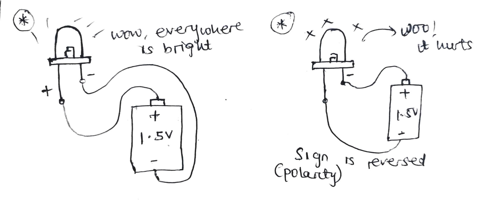

Electronic circuit components and their functions explained
This section will be introducing the most important circuits or electronics components because most of this components are what circuits are composed or are made up of.
To start off with the one we are most familiar with which is a battery.
A battery is considered as one of the source of voltage. It
has
symbols in circuit analysis as shown below:

Use case
Battery use includes
- To power our devices
- To push electron through a conductor
The next component of discussion is the resistor, which offers resistance in a circuit and by its name tends to resist or limits the flow of current in a circuit or branches in a circuit. Though it might sound kind of a bad thing to have but the truth is if you try to connect a 9v battery to a torch that is capable of handling 3v then it’s going to blow off. So that’s where resistor can come in to play by limiting the amount of current flow as well as voltage across.

As you can see in the image above, resistor has a wiggly or zigzag symbol. Below, it values is also written by it side which can be 4ohms, 20mOhms(milliOhms) etc.
As battery is something we can get in the market place, resistor too can be bought as a separate or discrete component and on it there is no written value as we used to do if we are to analyze a circuit rather it has a color code and this color code can be decoded and it value can be known by referencing the datasheet.
.jpg)
Now you might think that the next component should be current no-no-no, current is not a discrete component and it is not what we can see, touch or hold. It just magically flows through a conductive material like wire or a resistor.
Use case
Resistor use includes
- To reduce current flow
- To allow voltage to be dropped across it
- For safety
Another component that most of us might be familiar with is the capacitor.
A capacitor in simple term is a passive device or component
that
store charges for a temporary period (more explanation would be
covered in other section).
To even get a bigger picture of how a capacitor works is, have you ever seen any device that you disconnect its power supply but is still turned on for a little seconds? if yes then it’s the capacitor that’s providing it stored energy but over a short period of time and it is useful because of the fluctuation that most power supply has which can destroy our devices.
It symbol is shown below and as always it value is written by it side both when we are analysing circuit or when you go to buy the component in the market. Unit is Farad (F) and values can be 4uF(microFarad), 3F etc.
Use case
Capacitor use includes
- For reducing flunctuations in power supply
- Also for indication if our device is charging or working and many more uses
Next is an inductor,
An inductor which works same way as the capacitor because
they store charges but one of their difference is that it uses
wounded conductors rather than capacitor that uses plates separated
by air gap or dielectrics. It has unit henry(H) and can be 4uH(microHenry), 3H etc.

Use case
Inductor use includes
- For reducing flunctuations in power supply
- Also for indication if our device is charging or working and many more uses
The diode (or di-electrode) is another component that allows the flow of current in one direction which means if you reverse the direction of current then it is not going to work – you can see from the symbol.
There are variations or different types of diode and the most common one is the small light bulb that is found in most torches these days and term as light emitting diode or L.E.D for short. If you would love to experiment this, go try it out as shown in image (2).
 Use case
Diodes use includes
- For protection
- Also for indication if our device is charging or working and many more uses.
With the explanation of diode, it would be cool to talk about the transistor.
Transistor which is the next gem
and the component behind all the microchips we’ve today starting from our mini calculator.
The transistor is based on the combination of certain diodes in a certain configuration and has a
symbol as show below:
This is to say that it is very important to how this component works.
Use case
Transistor use includes
- For switching - which do yields the ones and zeros (1's and 0's) that our computers used to perform calculation
- Two is for amplification of signals. For e.g. when we speak into a microphone, we get a loud output from the speaker. .
ICs: are called integrated circuit i.e. it’s a circuit on its own and composed of other circuit components mostly the combination of diodes, resistor, transistor, capacitor and inductor. ICs tend to make tasks easier by allowing engineers to design device that can be small in size and even allows things to be done by just adding or integrating more stuff to it instead of building things all from scratch.

Some other components and their use case are:
Use case
IC's use includes
- To ease the time of building great electronics devices
- There is no limitation to what an IC can do
The switch which is use for connecting or disconnecting devices from the energy source.
The fuse is a safety component that is mostly installed or inserted between an energy source and the devices. This means that if there is excessive current drawn or fault, it’s just going to break off and save those devices

In summary this is the most common component that we would encounter or most likely work with. Warning don’t stress out just go through them and get a little snippet of what this stuffs are and as time goes on thing will become clearer.